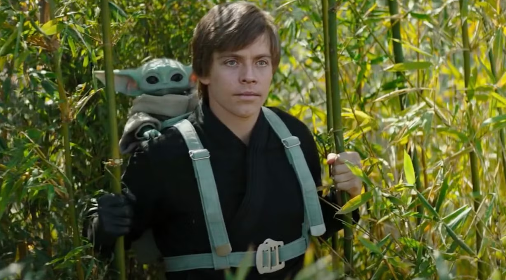

Most coverage of synthetic media focuses on harm. That focus is fair, given the scale of fraud, but it skips a real part of the picture. With consent and clear ethical limits, the same models help people with disabilities, support film production, and let students step inside historical "what-ifs."19

Aging or de-aging an actor used to require months of CGI work, heavy makeup, and a result that often looked plasticky. Deepfake methods have closed that gap, sometimes at lower cost.7
A clear example came from the Disney+ series The Mandalorian. The season-two finale needed a young Luke Skywalker, but Mark Hamill is in his seventies. The production team used a body double on set and laid a deepfake of young Hamill's face on top in post-production.7
The voice was also synthetic. Lucasfilm worked with the Ukrainian audio company Respeecher, feeding the model decades of archival Hamill audio from radio interviews and ADR sessions. The result was new dialogue spoken in the voice of a Hamill who no longer exists, without him recording a single new line.7
The same democratization changed who works in studios. An amateur VFX artist on YouTube, known as Shamook, posted a personal deepfake that looked sharper than the studio's official version. Lucasfilm did not file a takedown. They hired him.7 That is a small story, but it captures how quickly the talent pipeline shifted.
The medical use case is, to many people, the most meaningful one. Patients with throat cancer, stroke damage, or Amyotrophic Lateral Sclerosis (ALS) can keep speaking in something close to their own voice long after their natural speech is gone.68
For decades, patients who lost their voice were stuck with generic, robotic text-to-speech. Voice banking changes the workflow. Right after diagnosis, while the patient still has clear speech, they read a set of training sentences into an AI tool.8
When the disease takes their natural speech, they type or use eye-tracking, and the device speaks the words in their own voice, with their accent, pauses, and small inflections. For a grandparent who wants to keep reading bedtime stories to their grandchild, that is not a small thing.
The most public version of this story is Val Kilmer. In 2014 he had a tracheotomy for throat cancer. The surgery saved his life but left his voice damaged. When the team behind Top Gun: Maverick (2022) brought him back as Iceman, they worked with the London startup Sonantic.6
Sonantic faced a hard problem. Most voice models want hours of clean studio audio. They had short, music-laden archival clips from Kilmer's films, which is the opposite of clean. After cleaning the audio, the engineers were left with about a tenth of the data they would normally use, so they trained a custom set of models and picked the most expressive one.6 The end result was not just a single line in the film. Kilmer was given a desktop app that can speak any sentence in his real voice. We should be honest here: results vary across patients, and these tools depend on having usable archival audio. They are not a cure. They are a way to keep some of what was lost.
In academia, deepfakes are being used to build immersive history lessons. The clearest example is In Event of Moon Disaster, a project from the MIT Center for Advanced Virtuality.20
When Apollo 11 launched in July 1969, the chance of failure was real. Presidential speechwriter William Safire drafted a contingency speech for Richard Nixon to read in the event that Armstrong and Aldrin were stranded on the Moon. The mission succeeded, so the speech was filed away and never read aloud.20
Fifty years later, MIT researchers used voice cloning and video dialogue replacement to build a counterfactual broadcast. They hired an actor to read the contingency speech, used Respeecher to clone Nixon's voice from the late 1960s, and used Canny AI to map the new mouth movements onto archival television footage.20
The point of the project was not to fool anyone. It was the opposite. The installation, shown at film festivals and used in classrooms, asks the audience to feel how convincing this technology is, and then to think about what that means for the news they consume.20 This kind of "inoculation" approach is also supported in the academic literature on misinformation, which finds that prebunking can reduce later belief in false claims.21